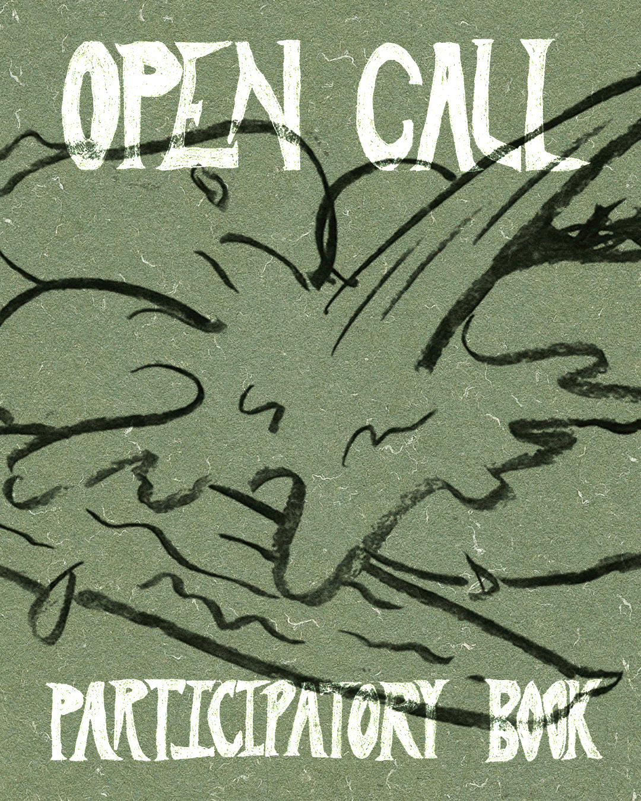

GET INVOLVED
The notebook is never finished. You are invited to write, respond, draw, or add fragments to its pages. Each interaction extends the archive and connects unknown contributors across time and place. Participation keeps the notebook alive!
